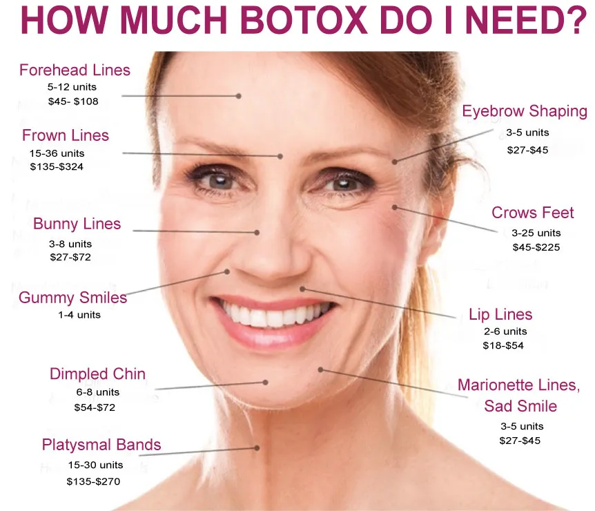

What are Botox and Dysport?
Both are brands of botulinum toxin type A, a purified protein that temporarily quiets a muscle. Botox Cosmetic also contains human albumin and sodium chloride. Dysport contains human serum albumin and lactose, and may carry trace cow’s-milk protein, which matters if you have a milk-protein allergy.
In medicine it is used for muscle spasms and severe underarm sweating. Cosmetically, it softens:
- Frown lines between the eyebrows
- Horizontal forehead lines
- Crow’s feet
- Marionette lines at the corners of the mouth
- Smoker’s lines around the lips
As a rule, Botox or Dysport works best in the upper face, while dermal fillers do most of the work lower down. They are different tools: fillers add volume under a line, Botox stops the muscle from creasing it.
How does it work?
A wrinkle forms at right angles to the muscle beneath it. The forehead muscle runs vertically, so raising your brows creates horizontal lines; the two frown muscles sit almost horizontally, so they make vertical “11s”. Botox is injected into those muscles and blocks the nerve signal that makes them contract. Without the contraction, the skin above has a hard time creasing.
Lines that are still visible when your face is completely relaxed often need a combination: Botox to soften the movement and a filler to lift what is left.
It takes two to four days to bind to the nerve endings, so improvement starts within days and peaks at about 10–14 days. Whatever you see at two weeks is the full result.
Who should not have it
Please tell Rebecca about your health and medications at your consultation. Botox and Dysport are not right for you if you have:
- ALS (Lou Gehrig’s disease)
- Myasthenia gravis
- Autonomic neuropathy
- Lambert-Eaton syndrome or another muscle or nerve disease
- Difficulty swallowing
- Weak forehead muscles or drooping eyelids
- A current viral infection
- Antibiotic treatment with gentamicin or amikacin
- Albumin or cow’s-milk protein sensitivity (Dysport)
It is also not given if you are pregnant, trying to conceive, or breastfeeding. It is always better to be safe: you can have it later.
Side effects, and how an experienced injector avoids them
Possible effects include tenderness, bruising, swelling, redness or itching where the needle went in, and less often dry mouth, tiredness, headache or neck pain. Product can occasionally spread a little beyond the target muscle; near the brows this can make an eyelid droop for a while.
Knowing the exact injection points, and using a small concentrated dose rather than a large diluted one, is what keeps product where it belongs. That is why who injects you matters more than anything else. Six habits keep you safe:
- Choose an experienced medical professional, never a salon or a “Botox party”, where there is no emergency equipment and counterfeit or over-diluted product has been reported.
- Tell your injector about every health condition.
- List all medications, vitamins and supplements, especially injected antibiotics, muscle relaxants, allergy or cold medicine and sleep aids.
- Follow your pre- and post-treatment instructions exactly.
- Report any side effect that bothers you or doesn’t go away.
- Have it done in a medical setting where any reaction can be treated straight away.
Gallery

I am very happy!! I don’t even appear to bruise. Thank you for being someone that is so talented and trustworthy, Victoria!
I was very nervous of needles and you helped me by talking me through it. You are competent, knowledgeable, and professional.
Botox & Dysport FAQ
Does Botox hurt?
Very little. The needles are tiny, and a numbing cream or cold pack can be applied 10–20 minutes beforehand, so most people feel only a quick pinch, if anything.
What is recovery like?
You can go straight back to work. Keep your head upright for the rest of the day and don’t rub or massage the treated area, so the product stays exactly where it was placed.
How long does Botox last?
Most people enjoy the effect for three to five months. Age, facial structure and expressions, smoking, diet, skincare, sun damage and repeat use can all shorten or lengthen that.
How often can I have it?
Not more often than every three months in the same area. Injecting more often, or in larger amounts, raises the chance your body forms antibodies that make it less effective.
Botox or filler: which do I need?
Botox relaxes the muscle that creases a line; filler lifts a line or restores volume. Botox usually suits the upper face, fillers the cheeks, lips, folds and jaw. Many people benefit from both, which Rebecca will map out at your consultation.
This page is general information, not medical advice. Your suitability for any treatment is confirmed at a consultation with Rebecca Victoria Adam, RN, Certified Aesthetic Injector.